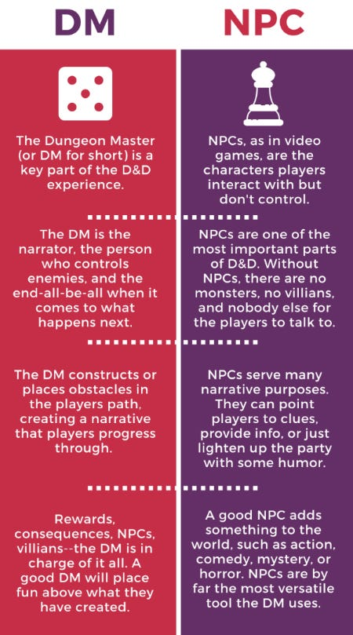

Being the Storyteller
As a Game Master (also known as Dungeon Master or GM and DM), your main job is to guide the players through their adventure. Anything they interact with is being controlled and organized by the GM. If a player encounters a monster, the GM will be the one to see how the monster interacts with the player.
Being the GM not only means that you have to guide the players through the adventure, it also means you get to create and participate in it. As mentioned before, a player could run into a monster, and the GM has to see how the interaction ends up going, but who decided a monster would be there and why are we here in the first place? All of these are decided by the GM before the start of the campaign. The players have to get to these instances, and the GM has to guide them. The main flow of the GM can be broken down into the following three categories.
Build Adventures
As a GM, you can create your own adventure, or you can use one of hundreds of pre-made adventures. Building doesn't need to mean from the ground up; it can just mean organizing an adventure for a group of friends based on something you've found online, but making sure all the details are fine-tuned and geared toward your players. If they are a new group of players, you will want to build an adventure for them that is accommodating to new players and helps them learn the interactions and flow of the game. A more experienced group may want to have a bigger challenge, though, and you will have to decide as the GM where to implement the difficulty into the adventure, whether it is more difficult enemies or more complicated puzzles that require thinking outside of the box.
Guide the Story
While you make the adventure, the players are actively working through it in an improvised way; you never know what your party will do! Ultimately, it is your adventure, and you get to decide how the players progress. You want to make sure they are having fun, but that it doesn't become too much for you to handle. Having a predetermined start, middle, and end will make this much easier. Setting goals for them that lead them to the next session will ensure they progress to your determined breaks in the story arc. The goals also allow you time to prepare repercussions for any actions taken by your party. If they decide to befriend the goblins at the start instead of killing them, maybe the goblins come out and help them defeat the dragon in the end!
Determine the Rules
You will have the final say as to what your party can do. If you don't think the level one characters can beat the level fifteen dragon by trying to kill it in its sleep, you don't have to let them do it, especially if it ruins the flow of your campaign. Ultimately, Dungeons and Dragons is about players asking the GM if they can do something, and the GM will say yes or no. Saying yes will end up with you setting up a requirement that needs to be met by your party to complete their action. If you decide it would be fun to let them try and take on the dragon as soon as they start, you can say they have to roll a critical success (a natural 20) or they have to roll a number higher than that and meet it exactly. It's your adventure, so you get to decide how it's played, but Dungeons and Dragons is supposed to be a fun game where you try things you never get to, so let your parties take chances and see how well they can roll!
Getting started
You only need a few things to get started as the GM, the biggest is an adventure! You will need some materials and a basic knowledge of the game. For basic knowledge take advantage of the free core rules found at the DND beyond website. For more information on being a GM, take a look at the following video created by Matt Mercer who is one of the most influential DND players to date!